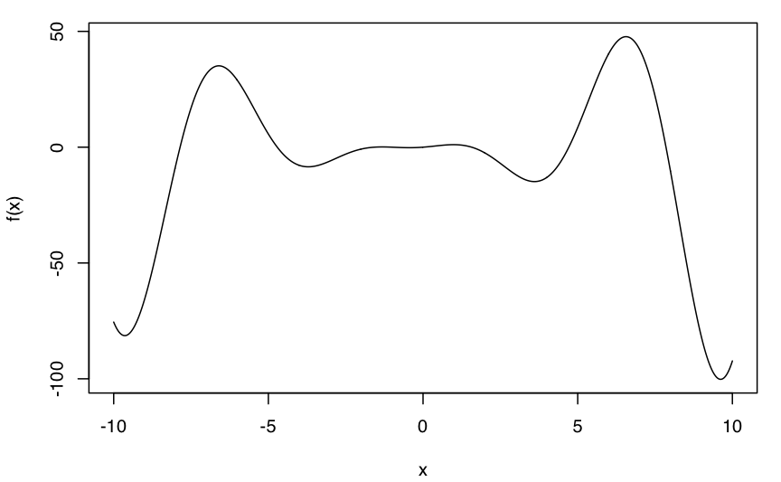
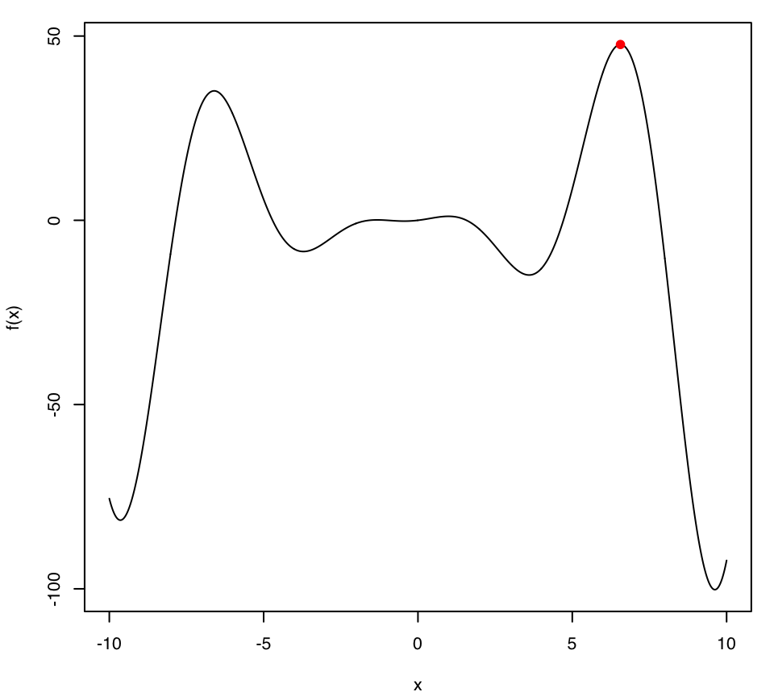
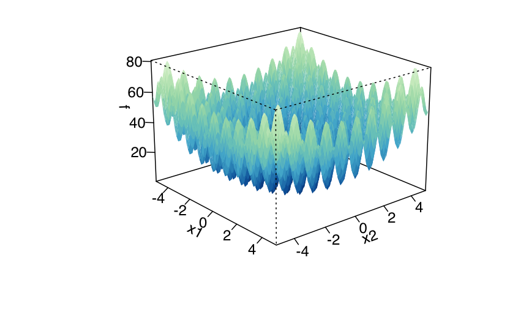
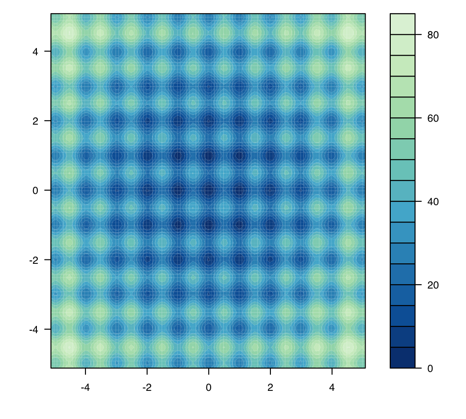
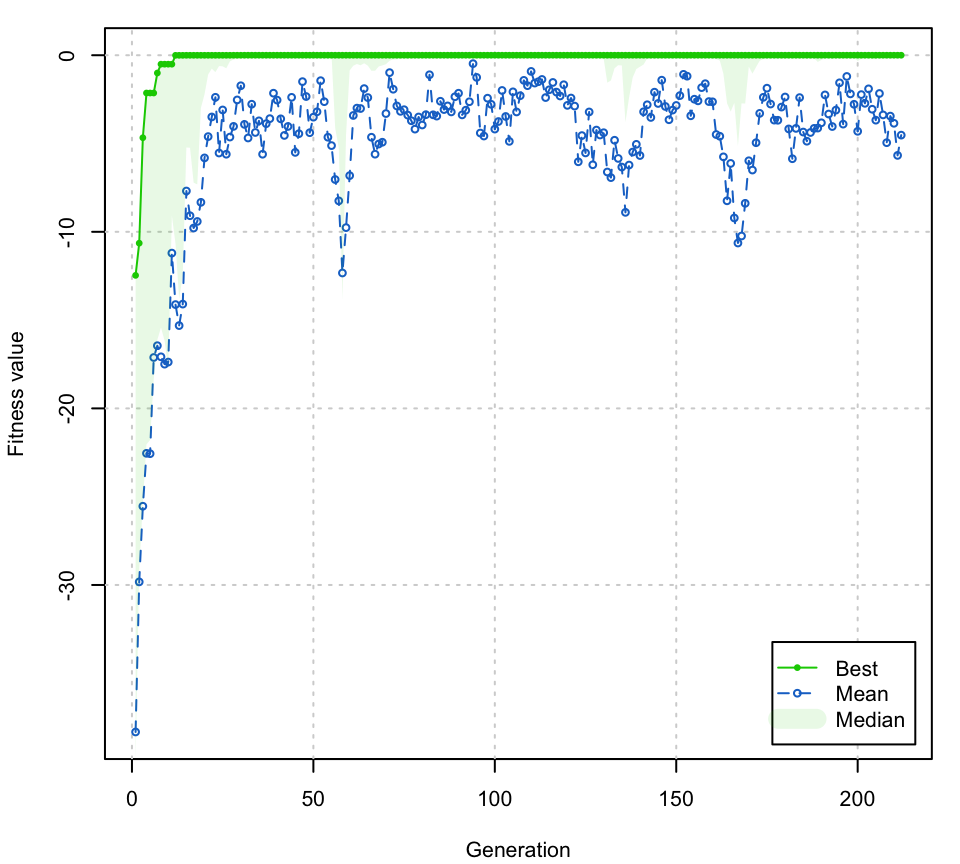
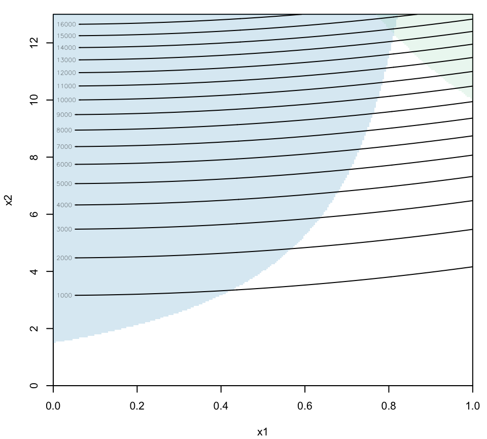
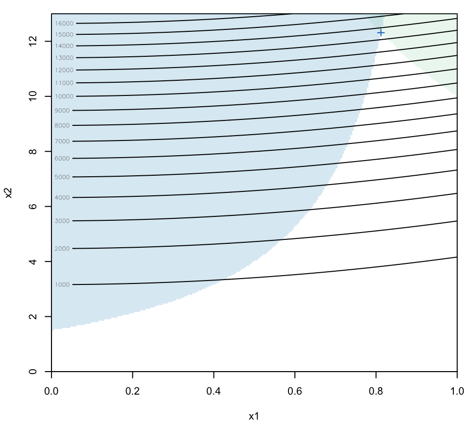
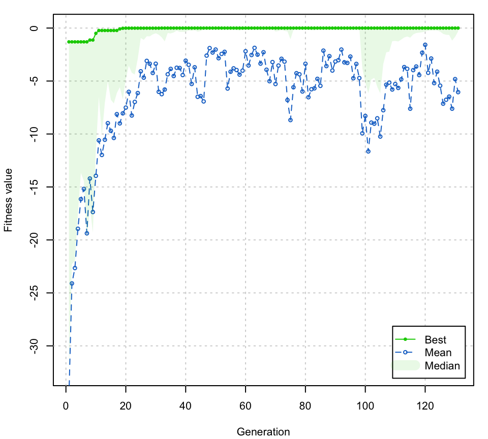
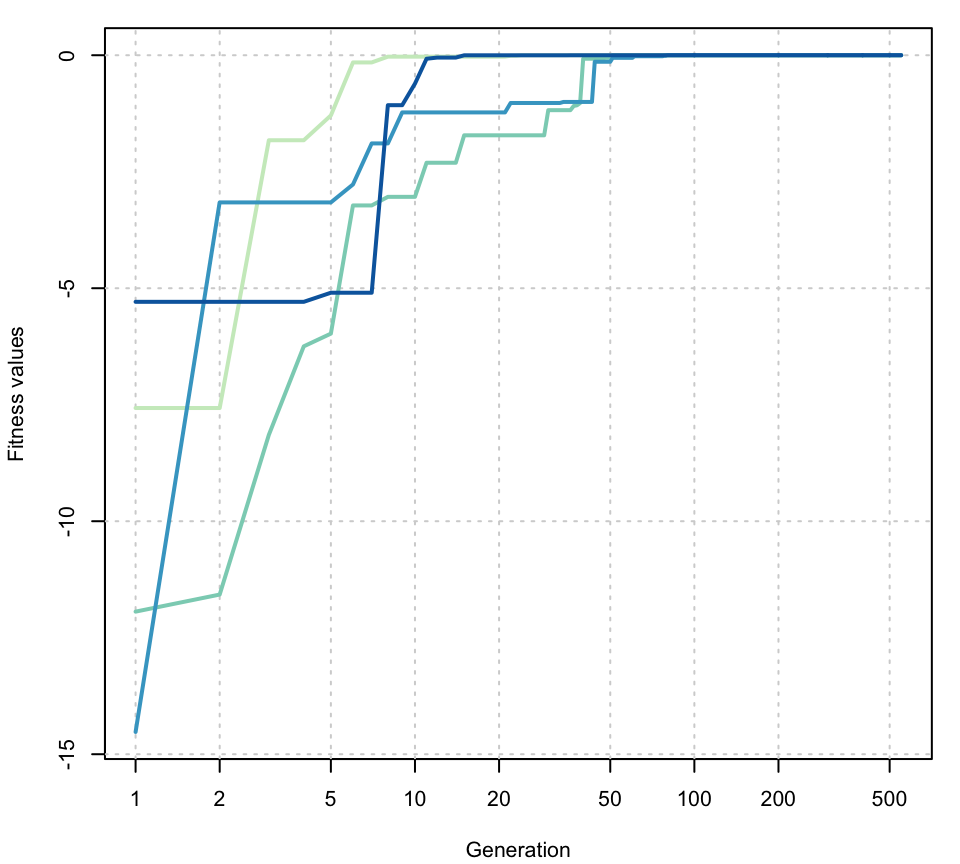

A quick tour of GA
Luca Scrucca
17 Feb 2018
Introduction
Genetic algorithms (GAs) are stochastic search algorithms inspired by the basic principles of biological evolution and natural selection. GAs simulate the evolution of living organisms, where the fittest individuals dominate over the weaker ones, by mimicking the biological mechanisms of evolution, such as selection, crossover and mutation.
The R package GA provides a collection of general purpose functions for optimization using genetic algorithms. The pakage includes a flexible set of tools for implementing genetic algorithms search in both the continuous and discrete case, whether constrained or not. Users can easily define their own objective function depending on the problem at hand. Several genetic operators are available and can be combined to explore the best settings for the current task. Furthermore, users can define new genetic operators and easily evaluate their performances. Local search using general-purpose optimisation algorithms can be applied stochastically to exploit interesting regions. GAs can be run sequentially or in parallel, using an explicit master-slave parallelisation or a coarse-grain islands approach.
This document gives a quick tour of GA (version 3.1) functionalities. It was written in R Markdown, using the knitr package for production. Futher details are provided in the papers Scrucca (2013) and Scrucca (2017). See also help(package="GA") for a list of available functions and methods.
Function optimisation in one dimension
Consider the function \(f(x) = (x^2+x)\cos(x)\) defined over the range \(-10 \le x \le 10\):
f <- function(x) (x^2+x)*cos(x)
lbound <- -10; ubound <- 10
curve(f, from = lbound, to = ubound, n = 1000)
GA <- ga(type = "real-valued", fitness = f, lower = c(th = lbound), upper = ubound)
summary(GA)
## ── Genetic Algorithm ───────────────────────────────────────────────────────────────
##
## GA settings:
## Type = real-valued
## Population size = 50
## Number of generations = 100
## Elitism = 2
## Crossover probability = 0.8
## Mutation probability = 0.1
## Search domain =
## th
## lower -10
## upper 10
##
## GA results:
## Iterations = 100
## Fitness function value = 47.70562
## Solution =
## th
## [1,] 6.560559
plot(GA)
curve(f, from = lbound, to = ubound, n = 1000)
points(GA@solution, GA@fitnessValue, col = 2, pch = 19)
Function optimisation in two dimensions
Consider the Rastrigin function, a non-convex function often used as a test problem for optimization algorithms because it is a difficult problem due to its large number of local minima. In two dimensions it is defined as \[ f(x_1, x_2) = 20 + x_1^2 + x_2^2 - 10(\cos(2\pi x_1) + \cos(2\pi x_2)), \] with \(x_i \in [-5.12, 5.12]\) for \(i=1,2\). It has a global minimum at \((0,0)\) where \(f(0,0) = 0\).
Rastrigin <- function(x1, x2)
{
20 + x1^2 + x2^2 - 10*(cos(2*pi*x1) + cos(2*pi*x2))
}
x1 <- x2 <- seq(-5.12, 5.12, by = 0.1)
f <- outer(x1, x2, Rastrigin)
persp3D(x1, x2, f, theta = 50, phi = 20, color.palette = bl2gr.colors)

A GA minimisation search is obtained as follows (note the minus sign used in the definition of the local fitness function):
GA <- ga(type = "real-valued",
fitness = function(x) -Rastrigin(x[1], x[2]),
lower = c(-5.12, -5.12), upper = c(5.12, 5.12),
popSize = 50, maxiter = 1000, run = 100)
summary(GA)
## ── Genetic Algorithm ───────────────────────────────────────────────────────────────
##
## GA settings:
## Type = real-valued
## Population size = 50
## Number of generations = 1000
## Elitism = 2
## Crossover probability = 0.8
## Mutation probability = 0.1
## Search domain =
## x1 x2
## lower -5.12 -5.12
## upper 5.12 5.12
##
## GA results:
## Iterations = 333
## Fitness function value = -1.094358e-07
## Solution =
## x1 x2
## [1,] 2.148747e-05 -9.477139e-06
plot(GA)
filled.contour(x1, x2, f, color.palette = bl2gr.colors,
plot.axes = { axis(1); axis(2);
points(GA@solution[,1], GA@solution[,2],
pch = 3, cex = 2, col = "white", lwd = 2) }
)The GA search process can be visualised by defining a monitoring function as follows:
monitor <- function(obj)
{
contour(x1, x2, f, drawlabels = FALSE, col = grey(0.5))
title(paste("iteration =", obj@iter), font.main = 1)
points(obj@population, pch = 20, col = 2)
Sys.sleep(0.2)
}
GA <- ga(type = "real-valued",
fitness = function(x) -Rastrigin(x[1], x[2]),
lower = c(-5.12, -5.12), upper = c(5.12, 5.12),
popSize = 50, maxiter = 100,
monitor = monitor)Constrained optimisation
This example shows how to minimize an objective function subject to nonlinear inequality constraints and bounds using GAs. Source: http://www.mathworks.it/it/help/gads/examples/constrained-minimization-using-the-genetic-algorithm.html
We want to minimize a simple function of two variables \(x_1\) and \(x_2\) \[ \min_x f(x) = 100 (x_1^2 - x_2)^2 + (1 - x_1)^2; \] subject to the following nonlinear inequality constraints and bounds:
-
\(x_1x_2 + x_1 - x_2 + 1.5 \le 0\) (inequality constraint),
-
\(10 - x_1x_2 \le 0\) (inequality constraint),
-
\(0 \le x1 \le 1\) (bounds), and
- \(0 \le x2 \le 13\) (bounds).
The above fitness function is known as “cam” as described in L.C.W. Dixon and G.P. Szego (eds.), Towards Global Optimisation 2, North-Holland, Amsterdam, 1978.
f <- function(x)
{ 100 * (x[1]^2 - x[2])^2 + (1 - x[1])^2 }
c1 <- function(x)
{ x[1]*x[2] + x[1] - x[2] + 1.5 }
c2 <- function(x)
{ 10 - x[1]*x[2] }Plot the function and the feasible regions (coloured areas):
ngrid <- 250
x1 <- seq(0, 1, length = ngrid)
x2 <- seq(0, 13, length = ngrid)
x12 <- expand.grid(x1, x2)
col <- adjustcolor(bl2gr.colors(4)[2:3], alpha = 0.2)
plot(x1, x2, type = "n", xaxs = "i", yaxs = "i")
image(x1, x2, matrix(ifelse(apply(x12, 1, c1) <= 0, 0, NA), ngrid, ngrid),
col = col[1], add = TRUE)
image(x1, x2, matrix(ifelse(apply(x12, 1, c2) <= 0, 0, NA), ngrid, ngrid),
col = col[2], add = TRUE)
contour(x1, x2, matrix(apply(x12, 1, f), ngrid, ngrid),
nlevels = 21, add = TRUE)
MATLAB solution:
However, note that the provided solution does not satisfy the inequality constraints:
A GA solution can be obtained by defining a penalised fitness function:
fitness <- function(x)
{
f <- -f(x) # we need to maximise -f(x)
pen <- sqrt(.Machine$double.xmax) # penalty term
penalty1 <- max(c1(x),0)*pen # penalisation for 1st inequality constraint
penalty2 <- max(c2(x),0)*pen # penalisation for 2nd inequality constraint
f - penalty1 - penalty2 # fitness function value
}Then
GA <- ga("real-valued", fitness = fitness,
lower = c(0,0), upper = c(1,13),
maxiter = 1000, run = 200, seed = 123)
summary(GA)
## ── Genetic Algorithm ───────────────────────────────────────────────────────────────
##
## GA settings:
## Type = real-valued
## Population size = 50
## Number of generations = 1000
## Elitism = 2
## Crossover probability = 0.8
## Mutation probability = 0.1
## Search domain =
## x1 x2
## lower 0 0
## upper 1 13
##
## GA results:
## Iterations = 227
## Fitness function value = -13580.44
## Solution =
## x1 x2
## [1,] 0.8121729 12.31312
fitness(GA@solution)
## [1] -13580.44
f(GA@solution)
## [1] 13580.44
c1(GA@solution)
## [1] -0.0005660245
c2(GA@solution)
## [1] -0.0003848102A graph showing the solution found is obtained as:
plot(x1, x2, type = "n", xaxs = "i", yaxs = "i")
image(x1, x2, matrix(ifelse(apply(x12, 1, c1) <= 0, 0, NA), ngrid, ngrid),
col = col[1], add = TRUE)
image(x1, x2, matrix(ifelse(apply(x12, 1, c2) <= 0, 0, NA), ngrid, ngrid),
col = col[2], add = TRUE)
contour(x1, x2, matrix(apply(x12, 1, f), ngrid, ngrid),
nlevels = 21, add = TRUE)
points(GA@solution[1], GA@solution[2], col = "dodgerblue3", pch = 3) # GA solution
Hybrid GAs
Hybrid Genetic Algorithms (HGAs) incorporate efficient local search algorithms into GAs. In case of real-valued optimisation problems, the GA package provides a simple way to start local searches from GA solutions after a certain number of iterations, so that, once a promising region is identified, the convergence to the global optimum can be speed up.
The use of HGAs is controlled by the optional argument optim = TRUE (by default is set to FALSE). Local searches are executed using the base R function optim(), which makes available general-purpose optimisation methods, such as Nelder–Mead, quasi-Newton with and without box constraints, and conjugate-gradient algorithms. The local search method to be used and other parameters are controlled with the optional argument optimArgs, which must be a list with the following structure and defaults:
optimArgs = list(method = "L-BFGS-B",
poptim = 0.05,
pressel = 0.5,
control = list(fnscale = -1, maxit = 100))For more details see help(ga).
Consider again the two-dimensional Rastrigin function defined previously. A HGA search is obtained as follows:
GA <- ga(type = "real-valued",
fitness = function(x) -Rastrigin(x[1], x[2]),
lower = c(-5.12, -5.12), upper = c(5.12, 5.12),
popSize = 50, maxiter = 1000, run = 100,
optim = TRUE)
summary(GA)
## ── Genetic Algorithm ───────────────────────────────────────────────────────────────
##
## GA settings:
## Type = real-valued
## Population size = 50
## Number of generations = 1000
## Elitism = 2
## Crossover probability = 0.8
## Mutation probability = 0.1
## Search domain =
## x1 x2
## lower -5.12 -5.12
## upper 5.12 5.12
##
## GA results:
## Iterations = 131
## Fitness function value = 0
## Solution =
## x1 x2
## [1,] 0 0
plot(GA)
Note the improved solution obtained.
Parallel computing
By default searches performed using the GA package occour sequentially. In some cases, particularly when the evaluation of the fitness function is time consuming, parallelisation of the search algorithm may be able to speedup computing time. Starting with version 2.0, the GA package provides facilities for implementing parallelisation of genetic algorithms.
Parallel computing with GA requires the following packages to be installed: parallel (available in base R), doParallel, foreach, and iterators.
To use parallel computing with the GA package on a single machine with multiple cores is simple as manipulating the optional argument parallel in the ga() function call.
The argument parallel can be a logical argument specifying if parallel computing should be used (TRUE) or not (FALSE, default) for evaluating the fitness function. This argument could also be used to specify the number of cores to employ; by default, this is taken from detectCores() function in parallel package.
Two types of parallel functionality are implemented depending on system OS: on Windows only snow type functionality is available, while on POSIX operating systems, such as Unix, GNU/Linux, and Mac OSX, both snow and multicore (default) functionalities are available. In the latter case a string can be used to specify which parallelisation method should be used.
In all cases described above, at the end of GA iterations the cluster is automatically stopped by shutting down the workers.
Consider the following simple example where a pause statement is introduced to simulate an expensive fitness function.
library(GA)
fitness <- function(x)
{
Sys.sleep(0.01)
x*runif(1)
}
library(rbenchmark)
out <- benchmark(GA1 = ga(type = "real-valued",
fitness = fitness, lower = 0, upper = 1,
popSize = 50, maxiter = 100, monitor = FALSE,
seed = 12345),
GA2 = ga(type = "real-valued",
fitness = fitness, lower = 0, upper = 1,
popSize = 50, maxiter = 100, monitor = FALSE,
seed = 12345, parallel = TRUE),
GA3 = ga(type = "real-valued",
fitness = fitness, lower = 0, upper = 1,
popSize = 50, maxiter = 100, monitor = FALSE,
seed = 12345, parallel = 2),
GA4 = ga(type = "real-valued",
fitness = fitness, lower = 0, upper = 1,
popSize = 50, maxiter = 100, monitor = FALSE,
seed = 12345, parallel = "snow"),
columns = c("test", "replications", "elapsed", "relative"),
order = "test",
replications = 10)
out$average <- with(out, average <- elapsed/replications)
out[,c(1:3,5,4)]# test replications elapsed average relative
# 1 GA1 10 565.075 56.5075 3.975
# 2 GA2 10 142.174 14.2174 1.000
# 3 GA3 10 263.285 26.3285 1.852
# 4 GA4 10 155.777 15.5777 1.096The results above have been obtained on an iMac, Intel Core i5 at 2.8GHz, with 4 cores and 16 GB RAM, running OSX 10.11.
If a cluster of multiple machines is available, ga() can be executed in parallel using all, or a subset of, the cores available to the machines belonging to the cluster. However, this option requires more work from the user, who needs to set up and register a parallel back end.
For instance, suppose that we want to create a cluster of two computers having IP addresses 141.250.100.1 and 141.250.105.3, respectively. For each computer we require 8 cores, so we aim at having a cluster of 16 cores evenly distributed on the two machines. Note that comunication between the master worker and the cluster nodes is done via SSH, so you should configure ssh to use password-less login. For more details see McCallum and Weston (2011, Chapter 2).
library(doParallel)
workers <- rep(c("141.250.100.1", "141.250.105.3"), each = 8)
cl <- makeCluster(workers, type = "PSOCK")
registerDoParallel(cl)The code above defines a vector of workers containing the IP address for each node of the cluster. This is used by makeCluster() to create a PSOCK Snow cluster object named cl. At this point, objects and functions, but also R packages, required during the evaluation of fitness function must be exported along the nodes of the cluster. For example, the following code export the vector x, the fitness function fun, and load the R package mclust, on each node of the socket cluster:
clusterExport(cl, varlist = c("x", "fun"))
clusterCall(cl, library, package = "mclust", character.only = TRUE)At this point a ga() function call can be executed by providing the argument parallel = cl. For instance:
GA5 <- ga(type = "real-valued",
fitness = fitness, lower = 0, upper = 1,
popSize = 50, maxiter = 100, monitor = FALSE,
seed = 12345, parallel = cl)Note that in this case the cluster must be explicitely stopped with the command:
Island evolution
GAs can be designed to evolve using an Island evolution approach. Here the population is partitioned in a set of subpopulations (islands) in which isolated GAs are executed on separated processor runs. Occasionally, some individuals from an island migrate to another island, thus allowing subpopulations to share genetic material
This approach is implemented in the gaisl() function, which has the same input arguments as the ga() function, with the addition of the following argument:
numIslands: an integer value specifying the number of islands to use (by default is set to 4)migrationRate: a value in the range (0,1) which gives the proportion of individuals that undergo migration between islands in every exchange (by default equal to 0.10)migrationInterval: an integer value specifying the number of iterations at which exchange of individuals takes place (by default set at 10).
Parallel computing is used by default in the Island evolution approach. Hybridisation by local search is also available as discussed previously.
As an example, consider again the two-dimensional Rastrigin function. An Island GA search is obtained as follows:
GA <- gaisl(type = "real-valued",
fitness = function(x) -Rastrigin(x[1], x[2]),
lower = c(-5.12, -5.12), upper = c(5.12, 5.12),
popSize = 100,
maxiter = 1000, run = 100,
numIslands = 4,
migrationRate = 0.2,
migrationInterval = 50)summary(GA)
## ── Islands Genetic Algorithm ───────────────────────────────────────────────────────
##
## GA settings:
## Type = real-valued
## Number of islands = 4
## Islands pop. size = 25
## Migration rate = 0.2
## Migration interval = 50
## Elitism = 1
## Crossover probability = 0.8
## Mutation probability = 0.1
## Search domain =
## x1 x2
## lower -5.12 -5.12
## upper 5.12 5.12
##
## GA results:
## Iterations = 550
## Epochs = 11
## Fitness function values = -4.856666e-10 -4.856666e-10 -4.856666e-10 -4.856666e-10
## Solutions =
## x1 x2
## [1,] 2.980232e-08 -1.564622e-06
## [2,] 2.980232e-08 -1.564622e-06
## [3,] 2.561063e-08 -1.564402e-06
## [4,] 2.561063e-08 -1.564402e-06
plot(GA, log = "x")
Memoization
In certain circumstances, particularly with binary GAs, memoization can be used to speed up calculations by using cached results. This is easily obtained using the memoise package.
data(fat, package = "UsingR")
mod <- lm(body.fat.siri ~ age + weight + height + neck + chest + abdomen +
hip + thigh + knee + ankle + bicep + forearm + wrist, data = fat)
summary(mod)
x <- model.matrix(mod)[,-1]
y <- model.response(mod$model)
fitness <- function(string)
{
mod <- lm(y ~ x[,string==1])
-BIC(mod)
}
library(memoise)
mfitness <- memoise(fitness)
is.memoised(fitness)# [1] FALSE# [1] TRUElibrary(rbenchmark)
tab <- benchmark(GA1 = ga("binary", fitness = fitness, nBits = ncol(x),
popSize = 100, maxiter = 100, seed = 1, monitor = FALSE),
GA2 = ga("binary", fitness = mfitness, nBits = ncol(x),
popSize = 100, maxiter = 100, seed = 1, monitor = FALSE),
columns = c("test", "replications", "elapsed", "relative"),
replications = 10)
tab$average <- with(tab, elapsed/replications)
tab# test replications elapsed relative average
# 1 GA1 10 59.071 5.673 5.9071
# 2 GA2 10 10.413 1.000 1.0413sessionInfo()
## R version 3.4.3 (2017-11-30)
## Platform: x86_64-apple-darwin15.6.0 (64-bit)
## Running under: macOS Sierra 10.12.5
##
## Matrix products: default
## BLAS: /Library/Frameworks/R.framework/Versions/3.4/Resources/lib/libRblas.0.dylib
## LAPACK: /Library/Frameworks/R.framework/Versions/3.4/Resources/lib/libRlapack.dylib
##
## locale:
## [1] en_US.UTF-8/en_US.UTF-8/en_US.UTF-8/C/en_US.UTF-8/en_US.UTF-8
##
## attached base packages:
## [1] stats graphics grDevices utils datasets methods base
##
## other attached packages:
## [1] GA_3.1 iterators_1.0.9 foreach_1.4.4 knitr_1.19
##
## loaded via a namespace (and not attached):
## [1] Rcpp_0.12.15 codetools_0.2-15 crayon_1.3.4 assertthat_0.2.0
## [5] digest_0.6.15 rprojroot_1.3-2 backports_1.1.2 magrittr_1.5
## [9] evaluate_0.10.1 cli_1.0.0 stringi_1.1.6 rmarkdown_1.8
## [13] tools_3.4.3 stringr_1.2.0 yaml_2.1.16 compiler_3.4.3
## [17] htmltools_0.3.6References
McCallum, E. and Weston, S. (2011) Parallel R. O’Reilly Media.
Scrucca, L. (2013) GA: A Package for Genetic Algorithms in R. Journal of Statistical Software, 53/4, 1-37. URL http://www.jstatsoft.org/v53/i04/
Scrucca, L. (2017) On some extensions to GA package: hybrid optimisation, parallelisation and islands evolution. The R Journal, 9/1, 187–206. https://journal.r-project.org/archive/2017/RJ-2017-008